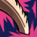

Lineage II Skills SP · Redesign 2026
Style guide
Nocne niebo, mosiężne ramy, złoto Adeny. Okna jak w interfejsie gry, ale z nowoczesnym rytmem odstępów, szkłem i czytelną typografią.
Kolory
Noc · tła i szkło
Night 0#05070B
Night 1#0A0E15
Night 2#111722
Night 3#18202E
Glassrgba 14,19,28 .78
Wellczarny 35% → 22%
Metal · ramy i akcent
Bronze 900#2A2214
Bronze 700#4A3C24
Bronze 500#7A6237
Gold 500#C9A253
Gold 300#F0D58E
Gold gradienttytuły, CTA, suma SP
Znaczenia z gry
Aktywny#E0B45A
Pasywny / MP#6F9DE0
Debuff / HP#D8584E
Toggle / plus#5FBF7D
Księga#B98AE0
Ink#ECE4D2
Typografia
Display · Cinzel 700Gladiator
Tytuł okna · Cinzel 12 / .14emZAKRES POZIOMÓW
Liczby · Cinzel 8004 218 000
UI · Inter 14 / 600Triple Slash
Treść · Inter 13Trzy szybkie cięcia. Moc 1 247.
Etykieta · Inter 10,5 capsPotrzebne SP
Cinzel tylko dla nagłówków, nazw klas i dużych liczb. Reszta w Inter z cyframi tabelarycznymi. Oba fonty hostowane lokalnie (woff2), bez zapytań do Google.
Przyciski i pola
/
3 wyniki
Sloty, herby, znaczniki
Slot skila · aktywny / pasywny / wybrany / niedostępny

Herb klasy
Znaczniki
AktywnyPasywnyDebuffToggleKsięgaFizyczny
Kroniki
C1C2 · Age of SplendorInterludeHigh Five
Paski i tooltip
Tooltip skila (hover na slocie)
Atak, który ogłusza wroga. Wymaga broni obuchowej. Moc 609. Możliwy over-hit.
Zużycie MP69Odnowienie13 sNaukaLv 74 · 350 000 SP
Zasady
Okno = sekcja.
Każdy panel to okno z paskiem tytułu w Cinzel i złotymi narożnikami. Wnętrze ciemniejsze „studnie” (well) na liczby i formularze.
Każdy panel to okno z paskiem tytułu w Cinzel i złotymi narożnikami. Wnętrze ciemniejsze „studnie” (well) na liczby i formularze.
Złoto oszczędnie.
Złoty gradient tylko na: suma SP, główny CTA, wybrana klasa / kronika / skill. Reszta brąz i stal.
Złoty gradient tylko na: suma SP, główny CTA, wybrana klasa / kronika / skill. Reszta brąz i stal.
Kolory z gry.
MP niebieski, debuff czerwony, pasywne stalowe ramki slotów. Gracz rozpoznaje znaczenie bez czytania.
MP niebieski, debuff czerwony, pasywne stalowe ramki slotów. Gracz rozpoznaje znaczenie bez czytania.
Tylko tryb ciemny.
Styl L2 to noc. Kontrast tekstu min. 4.5:1, fokus = złota obwódka 3 px, animacje ≤ 200 ms i wyłączane przez prefers-reduced-motion.
Styl L2 to noc. Kontrast tekstu min. 4.5:1, fokus = złota obwódka 3 px, animacje ≤ 200 ms i wyłączane przez prefers-reduced-motion.